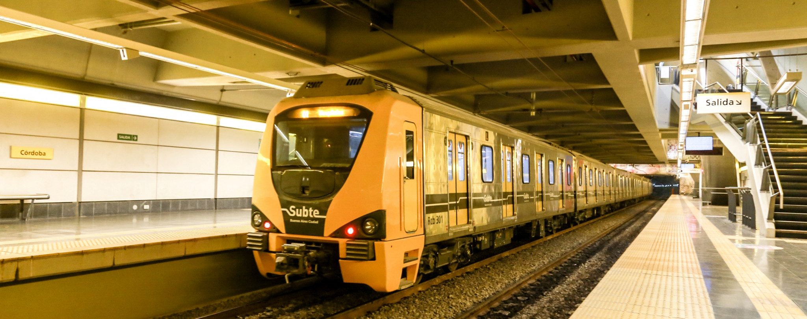
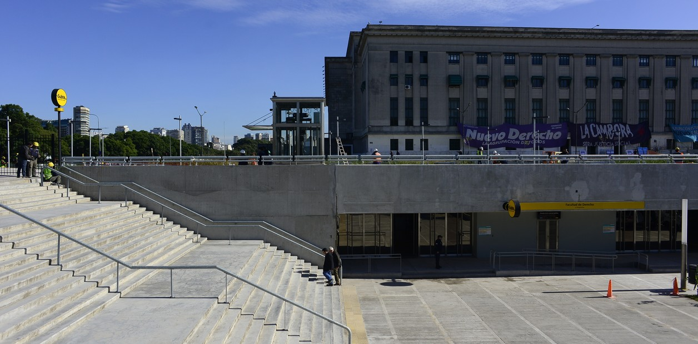
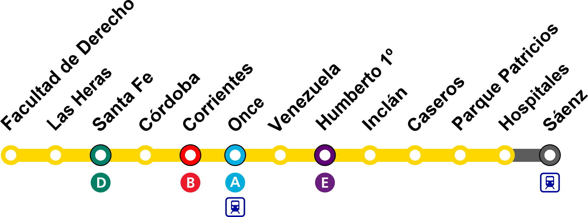

Información del servicio
La Línea H del Subte de Buenos Aires conecta importantes puntos de la ciudad, facilitando el traslado diario de miles de pasajeros. Es una línea moderna, accesible y diseñada para mejorar la movilidad urbana.
Destinos principales
- Hospitales
- Once
- Corrientes
- Facultad de Derecho

Estación: Facultad de Derecho


Horarios del servicio
| Día | Horario | Frecuencia |
|---|---|---|
| Lunes a Viernes | 05:30 - 23:30 | 5 min |
| Sábados | 06:00 - 00:00 | 7 min |
| Domingos | 08:00 - 22:00 | 10 min |

Accesibilidad
Rampas de acceso
Información sonora
Espacios para silla de ruedas
Señalización clara y visible